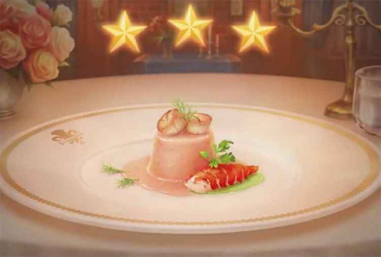

Lobster mousse

Description
Lobster Mousse is a very good spread to use at a family gathering or at a party.
Ingredients
- 2 cups cooked shrimp, minced
- ¾ cup minced onion
- ¾ cup minced celery
- 1 (10.75 ounce) can condensed cream of celery soup
- 1 (8 ounce) package cream cheese, softened
- 1 envelope (1 tablespoon) unflavored gelatin
- 1 tablespoon fresh lemon juice
- 1 cup mayonnaise
Steps
- In a medium saucepan, heat soup and add cream cheese. Heat until cheese is dissolved into the soup. Dissolve gelatin into the soup mixture and add lemon juice, mayonnaise, onion, celery and shrimp. Cook until heated through.
- Grease a 6 cup fish mold or other mold with extra mayonnaise or non-stick spray. Fill mold firmly with mixture. Smooth off the top and chill in refrigerator overnight.
- Invert mold onto platter and shake to release the mousse from mold. Garnish as desired.